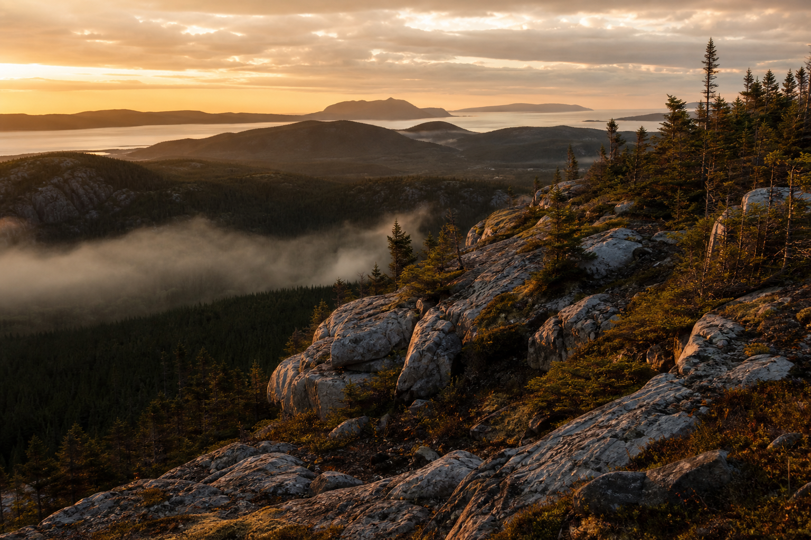
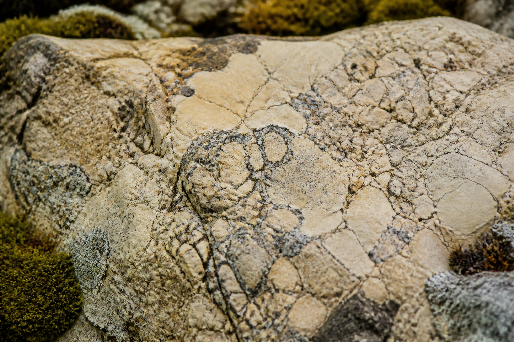
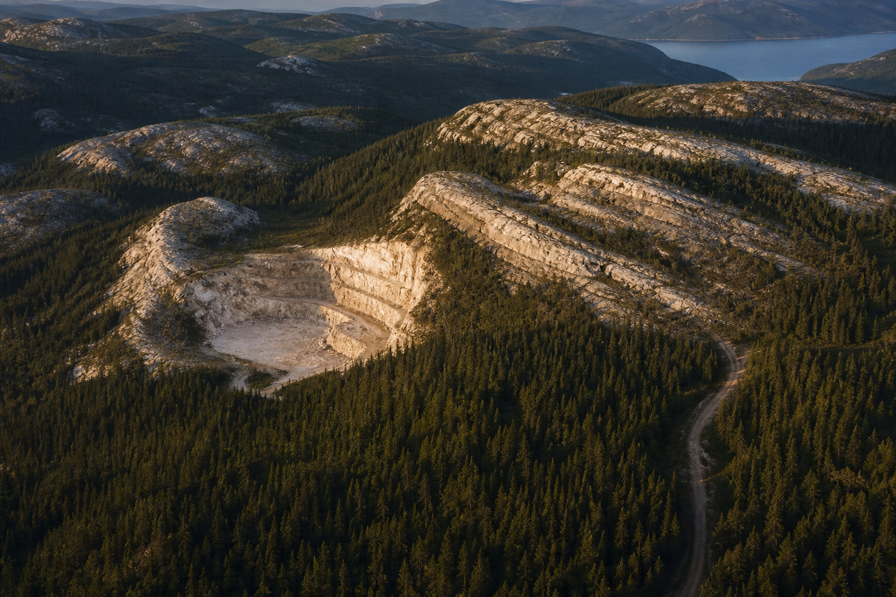
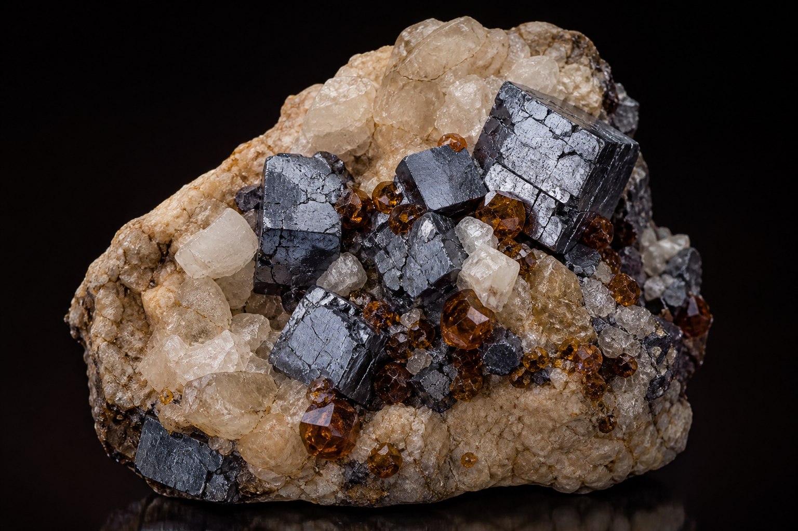
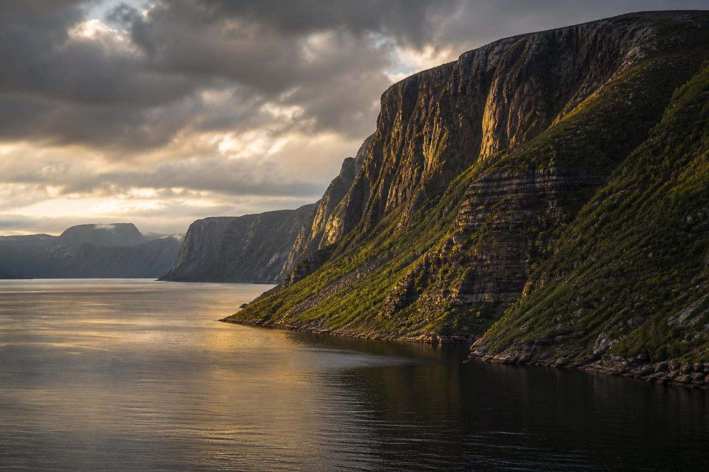
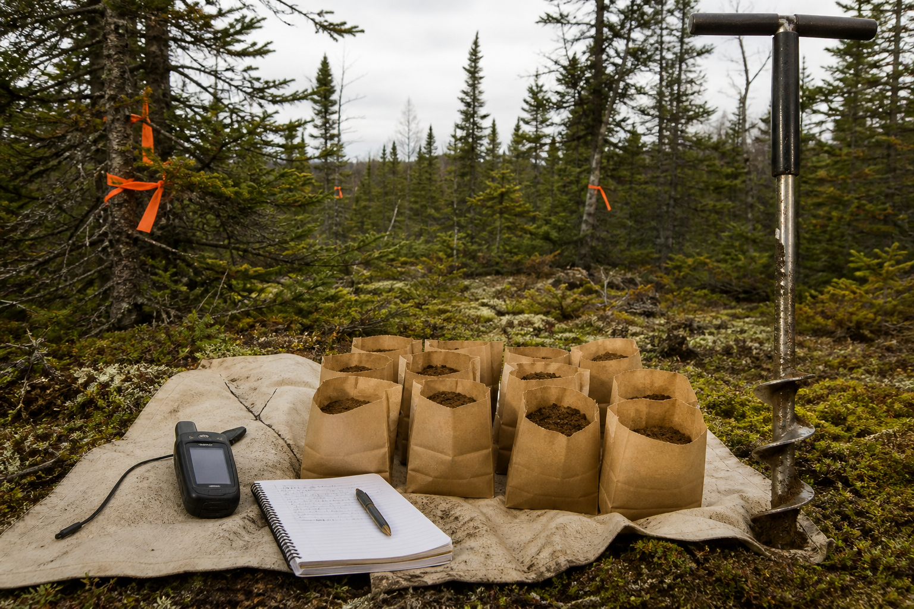
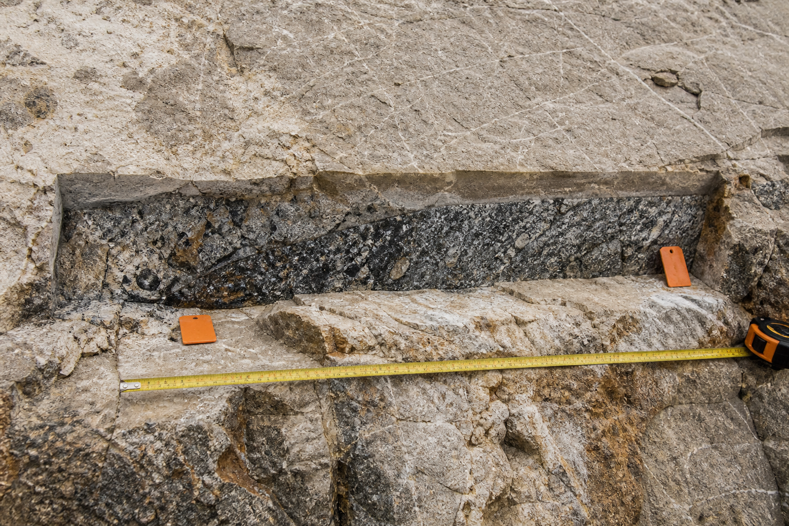
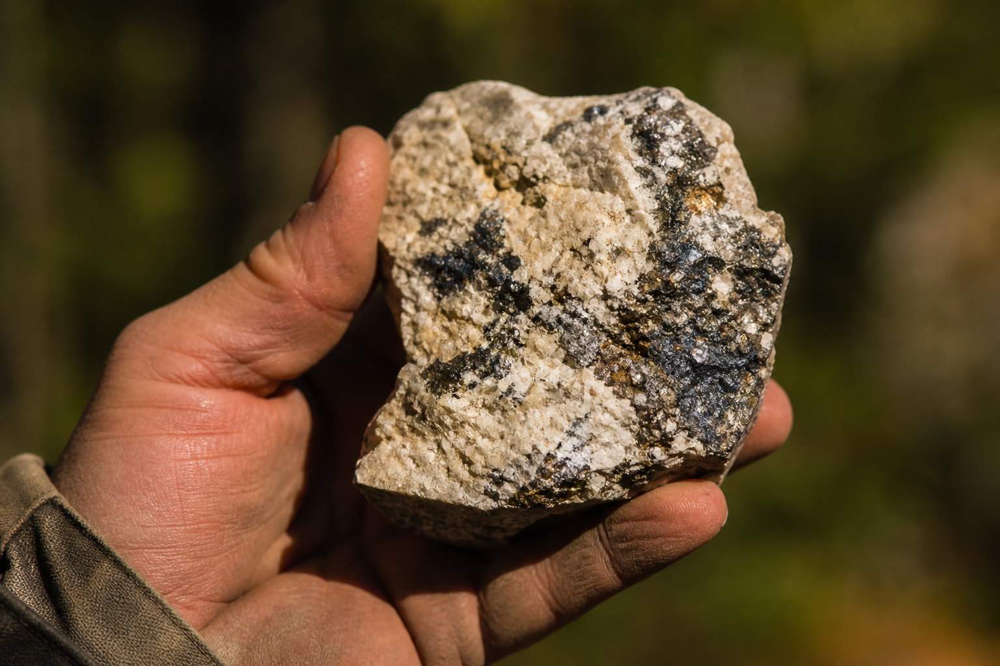
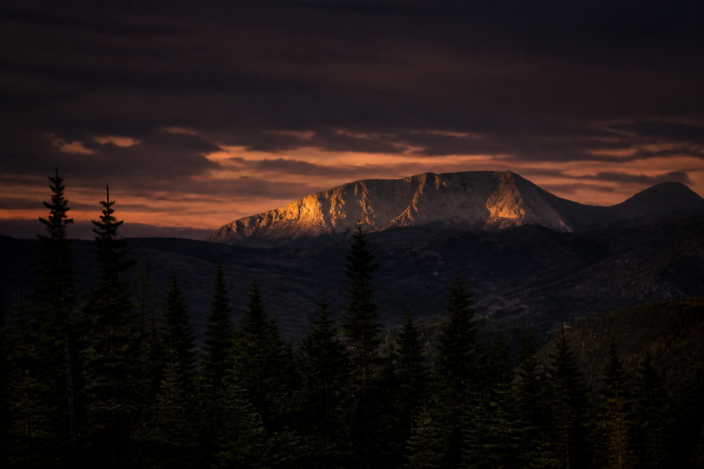

01
Historical baseline
Previous operators conducted exploration and drilling on and around Turner’s Ridge, establishing the initial mineralization occurrence and a technical dataset for follow-up.
Major & junior operators

Exploring the Turner’s Ridge Property — a road-accessible, early-stage Mississippi Valley-Type lead-zinc-silver-barite system in western Newfoundland and Labrador.
Turner’s Ridge at a glance
Western Newfoundland & Labrador, Canada · Highway 420 access
About Lynx
Lynx Resources Corp. (CSE: LYNX) is a mineral resource company engaged in the acquisition and exploration of mineral resource properties.
Its principal project is the Turner’s Ridge Property in western Newfoundland and Labrador, in which Lynx holds an option to acquire a 100% undivided right, title and interest. The Company may, from time to time, evaluate and acquire additional mineral properties of merit.
Work is advanced through systematic field programs, NI 43-101 technical evaluation, and a leadership group that combines capital markets experience with Newfoundland-based geoscience.


Principal Project
Two map-staked mineral exploration licences containing nine mineral claims covering 225 hectares.
Turner’s Ridge is an early-stage, carbonate-hosted lead-silver-zinc system with mineralization exposed at surface in a quarry and trenching area. The Property is road-accessible along Highway 420 in western Newfoundland and Labrador.
Historical operators previously drilled and explored the area. Lynx’s 2023 program of soil sampling, prospecting and channel sampling outlined a north–south lead anomaly and confirmed high-grade lead-silver-zinc mineralization in channel samples — the foundation for the Company’s 2026 Phase 1 program.
Exploration
Phase 1 work in 2026 follows NI 43-101 recommendations and is designed to refine priority lead-zinc-silver targets identified by historical operators and by Lynx’s 2023 campaign.
01
Previous operators conducted exploration and drilling on and around Turner’s Ridge, establishing the initial mineralization occurrence and a technical dataset for follow-up.
Major & junior operators
02
Lynx completed prospecting, a property-wide soil grid and channel sampling. Work identified a strong north–south lead geochemical anomaly extending beyond historically exposed mineralization and confirmed high-grade lead-silver-zinc in channels.
Lynx discovery step-out
03
Soil sampling is complete: 279 samples on an approximately 100 m × 25 m grid, submitted to Eastern Analytical Ltd. Next: induced polarization, mechanical trenching and channel sampling to prioritize targets.
NI 43-101 recommended
Geological setting
Turner’s Ridge hosts coarse to fine-grained galena with calcite, barite, pyrite and sphalerite within intensely brecciated Silurian dolostone.
The mineralization is interpreted as a Mississippi Valley-Type (MVT) lead-zinc-silver-barite system — a stratabound, epigenetic, carbonate-hosted deposit style.

Mississippi Valley-Type
Lead · Zinc · Silver · Barite — illustrative specimen photography
Why Turner’s Ridge
MVT lead-zinc-silver-barite mineralization hosted in brecciated dolostone, with surface expression in quarry and trench exposures.
The Property and surrounding area have been explored and drilled by historical major and junior operators.
2023 sampling plus 2026 Phase 1 soil, planned IP, trenching and channels — guided by an NI 43-101 technical report.
Western Newfoundland and Labrador, with reliable road access along Highway 420.
The Property
Editorial photography of western Newfoundland terrain, carbonate host rock, sulphide mineralization and field sampling methods. Images are representative of the district and deposit style; they are not claimed as site-specific Property photographs.




Leadership
Lynx brings together capital markets specialists, public-company finance, and a Newfoundland-based professional geoscientist.
President, CEO, Corporate Secretary & Director
Capital markets professional with experience in corporate finance, venture capital, and executive roles at junior mining companies.
Chief Financial Officer
CPA (CA) with 15+ years in corporate accounting, finance, equity markets and public company administration, including CFO roles for multiple TSXV and CSE issuers.
Director · P.Geo.
Entrepreneur and geoscientist with 30+ years across Canada, the U.S. and internationally, based in Grand Falls-Windsor, Newfoundland.
Director
Capital markets advisor experienced in corporate finance, public company advisory, financings, M&A and reverse takeovers.
Stay informed
Company announcements and exploration updates from Turner’s Ridge. Technical disclosure is reviewed by an independent Qualified Person.
Exploration · August 18, 2026
279 samples collected on an approximately 100 m × 25 m grid to infill historic soil lines. Samples submitted to Eastern Analytical Ltd., Springdale, for Au fire assay and ICP-34. Assays expected in 4–8 weeks.
Exploration · August 10, 2026
First public-company field program: soils, a 3 line-kilometre 2D-IP survey, mechanical trenching and channel sampling — following NI 43-101 recommendations.

Learn more about Lynx Resources Corp. and the exploration potential of the Turner’s Ridge Property.